| 15:30 |
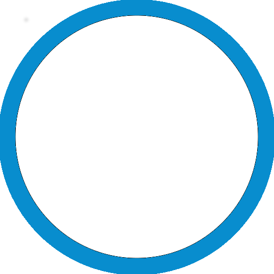
Accueil
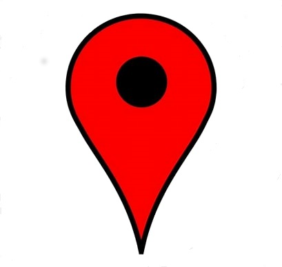
Mazarin
Village des partenaires et Cité des savoirs |
| 16:30 | Introduction Amphithéâtre Richelieu |
| 17:00 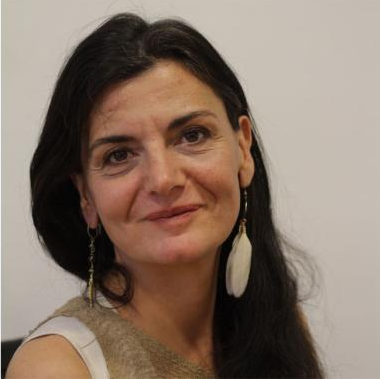 |
Session plenière - Keynote Speaker
Amphithéâtre Richelieu
Passer à une économie symbiotique : une économie régénérative de la planète, de l'humain et de la société. Des entreprises et des territoires montrent que nous pouvons enclencher une nouvelle ère où l’humain ne détruit pas pour prospérer mais au contraire régénère la fertilité du milieu dont il dépend. |
| 18:00 |
Break
Mazarin Village des partenaires et Cité des Savoirs |
| 18:25 |
Session plenière - Keynote Speaker
Amphithéâtre Richelieu
Machine learning et environnement. Mettre le numérique au service de la transition. |
| 19:25 |
Projets et Talents
Amphithéâtre Richelieu
Finale : Présentation des 5 pitchs finalistes |
| 20:00 |
Conclusion Mazarin Village des partenaires et Cité des Savoirs |
| 20:15 |
Apéritif/Cocktail dînatoire
Mazarin
Village des partenaires et Cité des Savoirs |
| 22:00 |
| 08:00 |
Accueil
Mazarin
Village des partenaires et Cité des savoirs |
|||
| 09:00 | Introduction Amphithéâtre Richelieu | |||
| 09:15 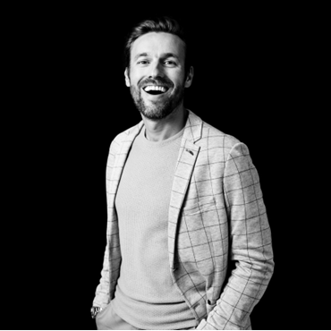 |
Session plenière - Keynote Speaker
Amphithéâtre Richelieu
Change experience. Le show qui va changer vos collaborateurs. |
|||
| 10:45 | Déplacement vers les salles | |||
| 11:00 | Conférence au choix parmi 4 sujets | |||
|
Conférence 1
Richelieu
Thème: Humain 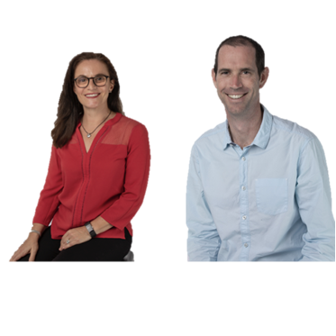 Est-ce que les projets seront plus faciles à conduire demain qu’ aujourd’hui ? |
Conférence 2
Condé
Thème: Sciences De l’automatisation à l’autonomie : les solutions digitales pour réaliser les grands projets industriels |
Conférence 3
Colbert
Thème: Sciences 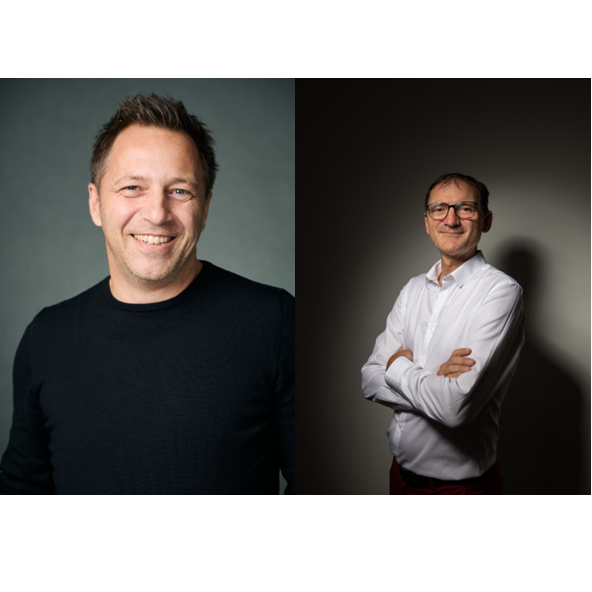 L’analyse de la valeur un outil au service de la soutenabilité ? |
Conférence 4
Lulli
Thème: Humain 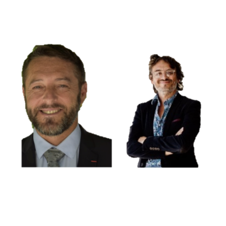 Imaginer des projets de l’espace sûr et juste |
|
| 11:45 |
Cocktail déjeunatoire
Mazarin
Village des partenaires et Cité des Savoirs |
|||
| 13:15 | Conférence au choix parmi 4 sujets | |||
|
Conférence 1
Richelieu
Thème: Environnement Management de projet à impact : Utopie ou Réalité ? |
Conférence 2
Richelieu
Thème: Environnement L’intelligence artificielle va-t-elle tuer l’innovation et ne laisser aucune place à l'humain, et notamment à la femme ? |
Conférence 3
Colbert
Thème: Humain 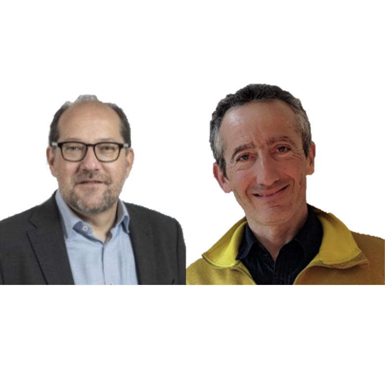 Déclencher une coopération efficace avec la Théorie des Contraintes (TOC) |
Conférence 4
Lulli
Thème: Environnement CONF’Expérience «PASSAGEs» |
|
| 14:00 | Déplacement vers les salles | |||
| 14:10 | Conférence au choix parmi 4 sujets | |||
|
Table ronde
Richelieu
Thème: Environnement 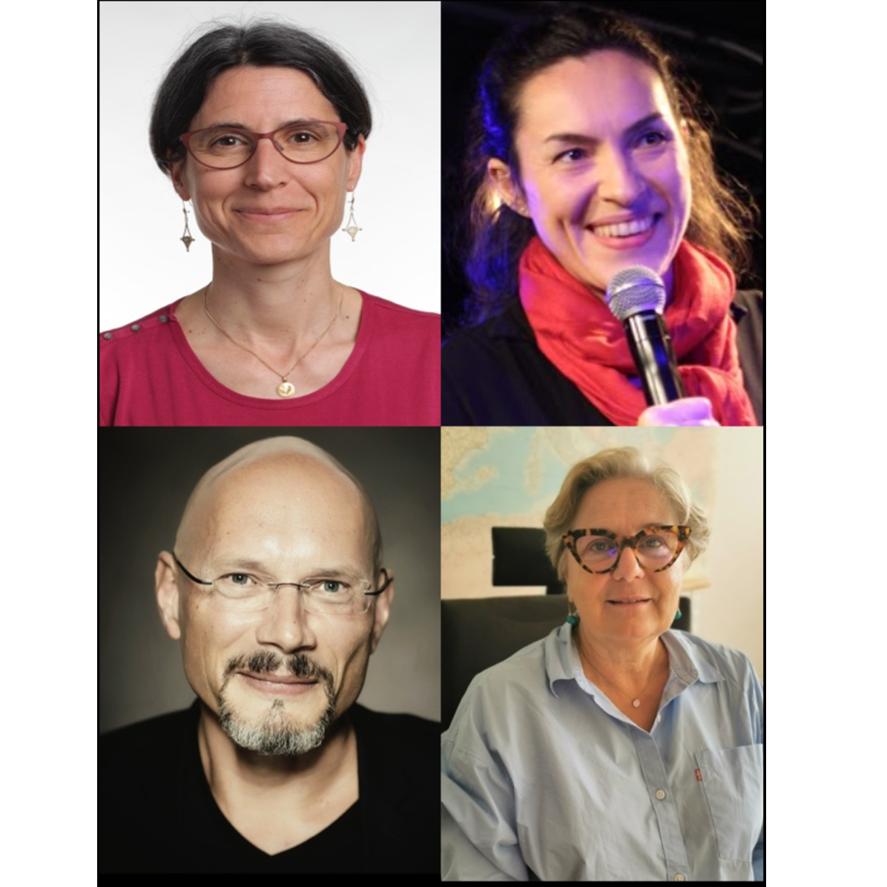 Comment agir pour ne pas subir la sobriété : de la contrainte à un atout pour les projets ! |
Conférence 2
Condé
Thème: Humain 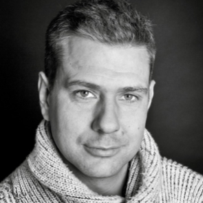 Ne me parlez plus de gestion des ressources, sauf si … |
Conférence 3
Colbert
Thème: Sciences Booster la compétence des jeunes en management de projet |
Conférence 4
Lulli
Thème: Humain 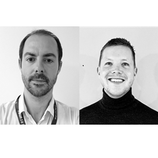 Transformer la planification projet, par l’automatisation et l’IA, pour augmenter radicalement la performance |
|
| 14:55 |
Break
Mazarin Village des partenaires et Cité des Savoirs |
|||
| 15:15 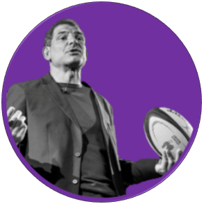 |
Session plenière - Keynote Speaker
Amphithéâtre Richelieu
Le rugby, un modèle d'organisation, de management et de performance. En cette année de Coupe du Monde de Rugby, quels sont les points communs qui lient les valeurs du Rugby à celles du monde professionnel ? |
|||
| 16:20 |
Projets et Talents
Amphithéâtre Richelieu
Résultats de la finale |
|||
| 16:40 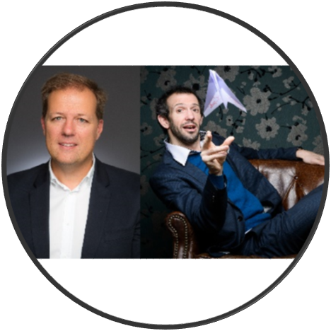 |
Conclusion
Amphithéâtre Richelieu
Agissons pour demain, que retient-on ? |
|||
| 17:00 | Clôture Amphithéâtre Richelieu | |||
| 17:30 | ||||